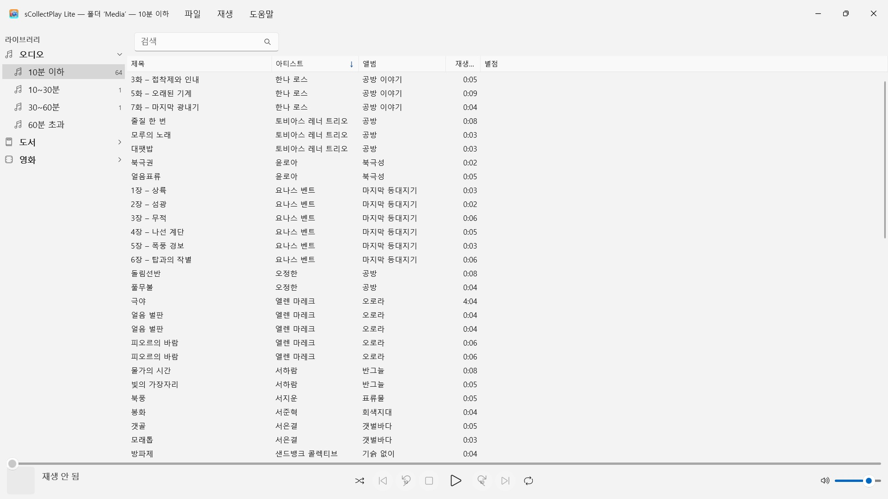
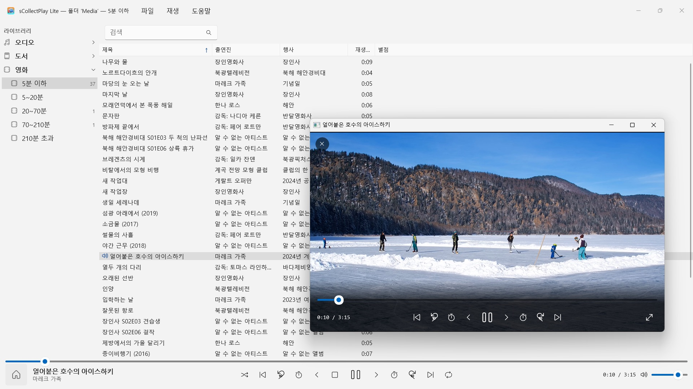

sCollectPlay Lite
무료: 폴더를 고르고 바로 재생 — 가져오기도 복사도 필요 없음
무료 · 2026년 11월부터 Microsoft Store에서 제공무료: 폴더를 고르고 바로 재생하세요. 음악, 오디오북, 팟캐스트, 영화, 전자책이 저절로 정리됩니다. 가져오기도, 계정도, 클라우드도 필요 없습니다. iTunes 라이브러리(XML)도 지원합니다.


sCollectPlay Lite는 컬렉션을 있는 자리 그대로 재생합니다. 어떤 폴더든, 외장 디스크든, 네트워크 드라이브든 상관없습니다. 폴더를 고르면 음악, 오디오북, 팟캐스트, 영화, 전자책이 하나의 목록에 정돈되어 나타납니다. 가져오기도, 복사도 없고, 파일은 무엇 하나 바뀌지 않습니다.
24개 언어: 영어, 독일어, 체코어, 크로아티아어, 네덜란드어, 핀란드어, 프랑스어, 헝가리어, 이탈리아어, 일본어, 한국어, 노르웨이어(보크몰), 페르시아어, 폴란드어, 포르투갈어, 루마니아어, 러시아어, 스페인어, 스웨덴어, 태국어, 터키어, 우크라이나어, 중국어(간체 및 번체). 앱은 Windows 표시 언어를 따릅니다.
이 에디션은 세션마다 하나의 소스를 재생합니다. 폴더 또는 XML 가운데 하나입니다. 다른 소스를 열면 이전 소스를 대신합니다.
두 가지 소스
- 폴더: sCollectPlay Lite는 폴더를 하위 폴더까지 살펴보고 제목, 아티스트, 앨범, 장르, 재생 시간을 파일 자체에서 읽습니다. 이후 ‘스캔한 폴더 업데이트’(Ctrl+R)는 새로 추가되거나 변경되거나 삭제된 파일만 읽습니다.
- iTunes XML: 재생목록, 별점, 재생 횟수가 담긴 Windows용 iTunes의 라이브러리. 곡이 음악, 오디오북, 팟캐스트, 장편 영화, 시리즈, 뮤직비디오 가운데 무엇인지는 앱이 XML에서 그대로 가져옵니다.
수고 없이 정돈됩니다
폴더는 파일이 노래인지 오디오북인지 알려 주지 않습니다. 그래서 sCollectPlay Lite는 스캔할 때 길이로 나눕니다. 오디오는 10분 이하, 10~30분, 30~60분, 60분 초과로, 비디오는 짧은 클립부터 3시간 반이 넘는 영화까지. 그러면 노래, 오디오 드라마 에피소드, 오디오북이 아무것도 설정하지 않아도 따로따로 놓입니다. 전자책과 PDF는 확장자로 알아봅니다.
찾기
- 제목, 아티스트, 앨범, 장르 등 여러 필드에 걸친 검색 — 재생목록 안에서도
재생
- 대기열, 임의 재생, 반복을 갖춘 오디오 재생
- 전용 창에서 재생하는 비디오, 슬로 모션, 프레임 단위 이동, 오디오 트랙 및 자막 선택, 전체 화면
- Windows는 대부분의 형식을 직접 재생합니다 — MP3, AAC, FLAC, OGG, Opus, WMA는 물론 MP4, MKV, AVI, WMV, MPG까지. AIFF, DSD, FLV처럼 Windows가 모르는 형식은 Windows에서 해당 파일 형식에 지정된 앱으로 넘깁니다 — 이를테면 VLC
정식 버전에서는 더 많이
sCollectPlay는 여러 폴더를 하나의 컬렉션으로 합치고, 마지막 소스를 다시 시작한 뒤에도 기억합니다. 또한 장르, 아티스트, 앨범별 열 브라우저, 자유롭게 고르는 열, 직접 만든 재생목록과 스마트 재생목록, 그리고 VLC와 기기용으로 재생목록을 M3U8 목록이 든 폴더로 내보내는 기능을 갖추고 있습니다.
파일은 있는 그대로
sCollectPlay Lite는 태그를 쓰지 않고, 메타데이터를 바꾸지 않으며, 아무것도 삭제하지 않습니다.
내 PC 안에서만
계정 없음, 클라우드 없음, 분석 없음, 광고 없음. 앱은 건네받은 폴더만 다룹니다. 언어마다 완전한 도움말이 들어 있습니다.
- Windows 11 이상 필요
- 24개 언어 지원
- 지원: SwiftAppsBavaria@gmx.net
- sCollectPlay 및 sCollectPlay Lite 개인정보 처리방침